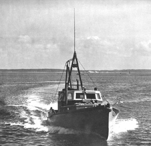

|  copyright - WHOI |
Built: 1939 Length: 41' Beam: 10' Draft: 5' |
In 1943 the Woods Hole Oceanographic Institution purchased Mytilus
from the Coastal and Island Waterways, which operated between Cape Ann
and Sandy Hook, New Jersey. WHOI used Mytilus, named for a
blue mussel, for local runs and meteorology. The vessel was sold
in 1953.